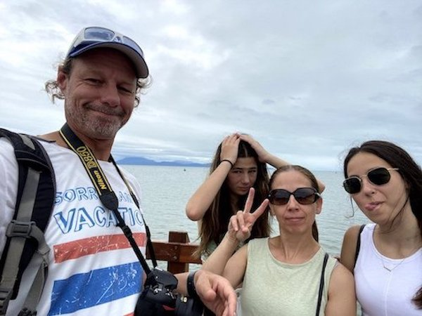

Introduction to Information Technology - Assignment 1
Name: Piper Harris
Student Number: s3899854
Student Email: s3899854@student.rmit.edu.au
Nationality: Australian
Language(s) Spoken: English
I have lived in Melbourne for most of my life, apart from the year I lived in Perth in 2007 and 2008. I started primary school in Perth at Highgate Primary School, before moving back to Melbourne and going to Bentleigh West Primary School. I then went to Brighton Secondary College, graduating in 2020, before commencing at RMIT in 2021.
I started playing basketball when I was about 6 and have been playing ever since. In 2014, I started playing representative basketball for the Oakleigh Warriors, who I played 4 seasons with, until 2017. I also played one rep season with Port Phillip in 2018. Currently I play in 3 teams, one in under 23s and two in women’s open grades, as well as training to become a referee. In the NBA I support the Chicago Bulls, and in the WNBA I support the Washington Mystics, who I was lucky enough to see play in 2017 at the Staples Centre against the Los Angeles Sparks.
My family consists of my mum, Kelly, my dad, Rob, and my younger sister, Remi. We also have two toy poodles, Maddy and Malibu.
My favourite thing to do is travel. I love going on overseas trips especially and exploring the world. My family go on international holidays annually, which was unfortunately disrupted by COVID last year. In 2018 I was lucky enough to attend a World Challenge expedition to India and Nepal with a group of kids from my school, entirely funded by ourselves. The trip was my first overseas without my family, and a fun challenge which we controlled and coordinated ourselves. Trekking the Annapurna Base Camp was definitely a highlight. I had planned a trip to travel all over Europe with my best friend this year, however due to COVID we have had to postpone it to a future date.
